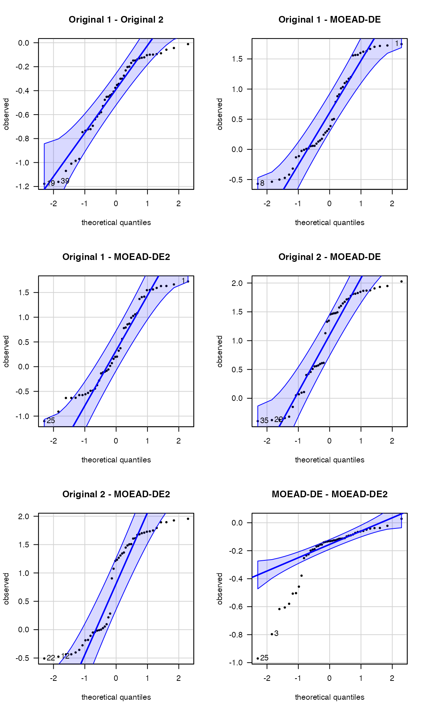

Adapting Algorithms for CAISEr
Felipe Campelo
2018-07-01
Source:vignettes/Adapting_Algorithm_for_CAISEr.Rmd
Adapting_Algorithm_for_CAISEr.RmdIntroduction
This is a short guide to adapting existing algorithms and problem instances for running an experiment using CAISEr. In this document, we cover:
- Definition of instance lists
- Adaptation of existing algorithms
- Some stuff you can do with the results
A general description of the CAISE methodology is available in our paper.1
Assembling an instance list
As stated in the documentation of both run_experiment and calc_nreps2, each instance must be a named list containing all relevant parameters that define the problem instance. This list must contain at least the field instance$FUN, with the name of the problem instance function, that is, a routine that calculates \(y = f(x)\). If the instance requires additional parameters, these must also be provided as named fields. Each instance can also have an alias, a unique name to distinguish it from other instances. If no alias is provided, the name of the function (instance$FUN) is used as the instance ID.
The Instance.list parameter for run_experiment() is simply a vector of these instance lists.
To illustrate how to adapt existing implementations to this structure, we assume that we are interested in comparing two multiobjective optimization algorithms for a (hypothetical) problem class that is well-represented by problems UF1 - UF7 (in dimensions between 10 and 40) from package smoof, . For this implementation to work with the MOEADr::moead() routine (see next section) some manipulation is necessary, but the instance list in this case is simply a list with each element containing the name of the routine as field $FUN (since all function names are different, no need for aliases).
suppressPackageStartupMessages(library(smoof))
suppressPackageStartupMessages(library(MOEADr))
### Build function names (instances: UF1 - UF7, dimensions 10 - 40)
fname <- paste0("UF_", 1:7)
dims <- c(10:40)
allfuns <- expand.grid(fname, dims, stringsAsFactors = FALSE)
# Assemble instances list
Instance.list <- vector(nrow(allfuns), mode = "list")
for (i in 1:length(Instance.list)){
Instance.list[[i]]$FUN <- paste0(allfuns[i,1], "_", allfuns[i,2])
}
### Build the functions listed in Instance.list
# (so that they can be properly used)
for (i in 1:nrow(allfuns)){
assign(x = Instance.list[[i]]$FUN,
value = MOEADr::make_vectorized_smoof(prob.name = "UF",
dimensions = allfuns[i, 2],
id = as.numeric(strsplit(allfuns[i, 1], "_")[[1]][2])))
}Adaptation of an existing algorithm implementation
We will use the MOEA/D implementation available in the MOEADr package as our base algorithm, and assume that we are interested in comparing the performance of two versions of this algorithm: the original MOEA/D and the MOEA/D-DE (see the documentation of MOEADr and references therein for details of these methods) as solvers of the hypothetical problem class represented by the available test instances. The performance of each algorithm on each instance will be measured according to an indicator known as Inverted Generational Distance (IGD - details here), for which smaller = better.
As described in the documentation of both run_experiment() and calc_nreps2(), an algorithm must contain an algorithm$FUN field (the name of the function that calls the algorithm) and any other elements/parameters that algorithm$FUN requires (e.g., stop criteria, operator names and parameters, etc.). An additional field, algorithm$alias, can be used to provide the algorithm with a unique identifier.
Supposing that the list in algorithm has fields algorithm$FUN = myalgo, algorithm$par1 = "a", algorithm$par2 = 5, then the function in algorithm$FUN must have the following structure:
myalgo <- function(par1, par2, instance, ...){
# do stuff
return(results)
}That is, it must be able to run if called as:
# remove '$FUN' and '$alias' field from list of arguments
# and include the problem definition as field 'instance'
myargs <- algorithm[names(algorithm) != "FUN"]
myargs <- myargs[names(myargs) != "alias"]
myargs$instance <- instance
# call 'algorithm$FUN' with the arguments in 'myargs'
do.call(algorithm$FUN, args = myargs)Finally, the algorithm$FUN routine must return a list object containing (at least) the performance value of the final solution obtained after a given run, in a field named value (e.g., result$value) .
To build the algorithm functions to be used in run_experiment(), we encapsulate (almost) all algorithm parameters within a myalgo() function, which receives only two inputs: the instance to be solved (i.e., one element from Instance.list) and the specification of which version of the algorithm is to be run (the original MOEA/D or the MOEA/D-DE).
# Prepare algorithm function to be used in run_experiment():
myalgo <- function(type, instance){
# Input parameters:
# - type (variant to use: "original" or "moead.de")
# - instance (instance to be solved, e.g., instance = Instance.list[[i]])
# All other parameters are set internally
## Extract instance information to build the MOEADr problem format
fdef <- unlist(strsplit(instance$FUN, split = "_"))
uffun <- smoof::makeUFFunction(dimensions = as.numeric(fdef[3]),
id = as.numeric(fdef[2]))
fattr <- attr(uffun, "par.set")
prob.dim <- fattr$pars$x$len
## Build MOEADr problem list
problem <- list(name = instance$FUN,
xmin = fattr$pars$x$lower,
xmax = fattr$pars$x$upper,
m = attr(uffun, "n.objectives"))
## Load presets for the algorithm provided in input 'type' and
## modify whatever is needed for this particular experiment
algo.preset <- MOEADr::preset_moead(type)
algo.preset$decomp$H <- 99 # <-- set population size
algo.preset$stopcrit[[1]]$name <- "maxeval" # <-- type of stop criterion
algo.preset$stopcrit[[1]]$maxeval <- 2000 * prob.dim # stop crit.
poly.ind <- which(sapply(algo.preset$variation,
function(x){x$name == "polymut"}))
algo.preset$variation[[poly.ind]]$pm <- 1 / prob.dim # <--- pm = 1/d
## Run algorithm on "instance"
out <- MOEADr::moead(preset = algo.preset, problem = problem,
showpars = list(show.iters = "none"))
## Read reference data to calculate the IGD
Yref <- as.matrix(read.table(paste0("../inst/extdata/pf_data/",
fdef[1], fdef[2], ".dat")))
IGD = MOEADr::calcIGD(Y = out$Y, Yref = Yref)
## Return IGD as field "value" in the output list
return(list(value = IGD))
}Finally, the Algorithm.list parameter must be assembled as a list of algorithm objects (each containing fields $FUN, $alias and, in this case, $type).
# Assemble Algorithm.list. Notice that we need to provide an alias for each
# method, since both algorithms have the same '$FUN' argument.
Algorithm.list <- list(list(FUN = "myalgo",
alias = "Algorithm 1",
type = "original"),
list(FUN = "myalgo",
alias = "Algorithm 2",
type = "moead.de"))Running an experiment using CAISEr
With the definitions above it is possible now to run an experiment using the iterative sample size determination implemented in CAISEr. For that, all we have to do is define the desired experimental parameters and use run_experiment():
library(CAISEr)
my.results <- run_experiment(Instance.list = Instance.list,
Algorithm.list = Algorithm.list,
power = 0.8, # Desired power: 80%
d = 0.5, # to detect differences greater
# than 0.5 standard deviations
sig.level = 0.05, # at a 95% confidence level.
se.max = 0.05, # Measurement error: 5%
dif = "perc", # on the paired percent
# differences of means,
method = "boot", # calculated using bootstrap.
nstart = 15, # Start with 20 runs/algo/inst
nmax = 200, # and do no more than 200 runs/inst
seed = 1234) # PRNG seed (for reproducibility)After that we can interrogate the results and perform inference, if we are so inclined. For instance, we can check if our sample of paired differences in performance is (at least approximately) Normal, so that we can assume a Normal sampling distribution of the means and use a t test with a clean conscience:
# Take a look at the data summary:
# summary(my.results)
# print(my.results)
suppressPackageStartupMessages(library(car))
car::qqPlot(my.results$data.summary$phi.j,
pch = 20, las = 1,
ylab = "observed results", xlab = "theoretical quantiles")
## [1] 3 18The normal QQ plot indicates that no expressive deviations of normality are present, which gives us confidence in using the t test as our inferential procedure of choice (as the sampling distribution of the means will be even more “well-behaved” than the data distribution).
It is also interesting to observe a few things from the summary table. First, we observed negative values of phi.j in the majority of instances tested, which suggests an advantage of the MOEA/D-DE over the original MOEA/D (remember, smaller = better for the quality indicator used). The MOEA/D-DE seems to require smaller sample sizes in most instances, suggesting a smaller variance of performance, which is also a desirable feature. Also, in three instances (UF_5_28, UF_3_29 and UF__7) the maximum number of runs/instance (nmax = 200 in the run_experiment() call) was not enough to reduce the standard error (our “measurement error” on the values of phi.j) below the predefined threshold of \(0.05\). There is no reason to worry in this particular case, however, since the resulting standard errors were not particularly high, and therefore their effect on the test power (resulting from the increased uncertainty in the estimation of these particular phi.j values) will be insignificant.
Since our observations phi.j already express paired differences per instance, we can compare the two algorithms using a simple, one-sample t.test:
t.test(my.results$data.summary$phi.j)##
## One Sample t-test
##
## data: my.results$data.summary$phi.j
## t = -5.627, df = 33, p-value = 2.897e-06
## alternative hypothesis: true mean is not equal to 0
## 95 percent confidence interval:
## -0.5165943 -0.2422327
## sample estimates:
## mean of x
## -0.3794135which indicates a statistically significant advantage of the MOEA/D-DE over the original MOEA/D (\(p = 2.90\times10^{-6}, df=33\)), with estimated mean IGD gains of \(37.94\%\) (\(CI_{0.95} = [24.22\%,51.66\%]\)) over the original MOEA/D for instances belonging to the problem class of interest.
These results could also be used to motivate further analyses. For instance, we can observe in the summary table that the only two cases for which the MOEA/D was substantially better than the MOEA/D-DE were for different dimensions of problem UF_5, which could suggest that some specific feature of this problem jeopardizes the latter algorithm’s search mechanism. This could motivate research on which particular aspect of this problem results in this loss of performance, and on how to improve the MOEA/D-DE.
Finally, the full data of the experiment is contained in other fields of the output list my.results, and the user is encouraged to explore these. As an example, we can generate box plots and confidence intervals on the mean performance of each algorithm on each sampled instance, which could inspire new questions for the researcher.
suppressPackageStartupMessages(library(dplyr))
suppressPackageStartupMessages(library(ggplot2))
suppressPackageStartupMessages(library(ggridges))
# Adjust instance names for plotting
mydata <- my.results$data.raw
mydata$Instance <- gsub(pattern = "UF\\_", replacement = "UF", mydata$Instance)
mydata$Instance <- gsub(pattern = "\\_", replacement = " (", mydata$Instance)
mydata$Instance <- sapply(mydata$Instance, FUN = function(x){paste0(x, ")")})
ggplot2::ggplot(mydata,
aes(x = Observation, y = Instance, fill = Algorithm)) +
ggridges::geom_density_ridges(alpha = 0.7) +
ggplot2::ggtitle("Estimated IGD distribution",
subtitle = "for each algorithm on each instance") +
ggplot2::theme(legend.position = "bottom")## Picking joint bandwidth of 0.0132
# Calculate confidence intervals for each instance
algos <- unique(mydata$Algorithm)
ninstances <- length(my.results$instances.sampled)
CIs <- data.frame(instance = rep(unique(mydata$Instance, times = 2)),
algorithm = rep(algos, each = ninstances),
x.est = 0, CI.l = 0, CI.u = 0)
for (i in 1:ninstances){
tmpdata <- mydata %>%
filter(Instance == unique(mydata$Instance)[i])
myt1 <- t.test(tmpdata$Observation[tmpdata$Algorithm == algos[1]])
myt2 <- t.test(tmpdata$Observation[tmpdata$Algorithm == algos[2]])
CIs[i,3:5] <- c(myt1$estimate, as.numeric(myt1$conf.int))
CIs[i + ninstances,3:5] <- c(myt2$estimate, as.numeric(myt2$conf.int))
}
# Plot individual confidence intervals for each instance
myplot <- ggplot2::ggplot(CIs, aes(x = instance,
y = x.est, ymin = CI.l, ymax = CI.u,
group = algorithm, colour = algorithm,
fill = algorithm))
myplot +
ggplot2::geom_pointrange(position = position_dodge(width = 0.5), alpha = 0.7) +
ggplot2::xlab("Instance") + ggplot2::ylab("IGD") +
ggplot2::ggtitle("Estimated mean IGD",
subtitle = "for each algorithm on each instance") +
ggplot2::theme(legend.position = "bottom",
axis.text.x = element_text(angle = 55, hjust = 1, size = 6))
F. Campelo, F. Takahashi, “Sample size estimation for power and accuracy in the experimental comparison of algorithms”, under review.↩